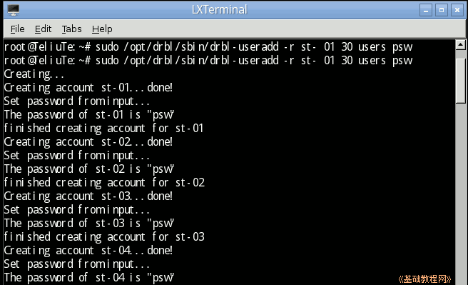
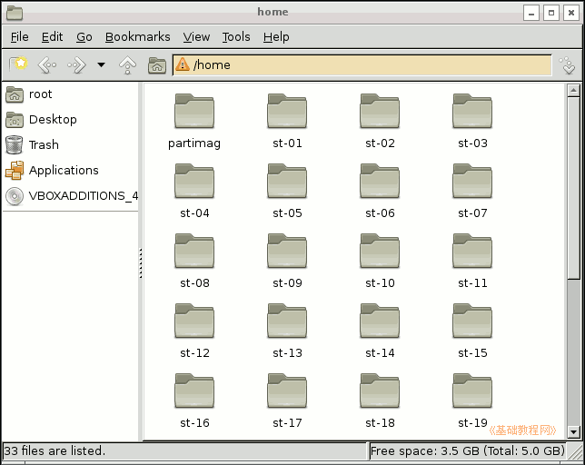
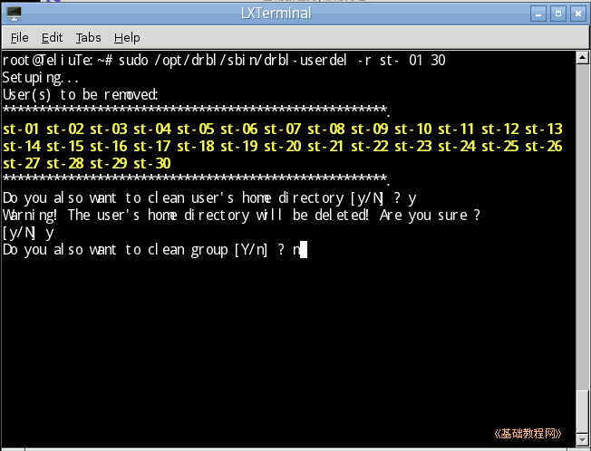

DRBL 操作指南
作者：TeliuTe 来源：基础教程网
四、管理命令 返回目录 下一课掌握一些常用的命令，可以更好地使用 DRBL；
1、常用命令
1）批量添加 DRBL 用户，打开终端输入命令 sudo /opt/drbl/sbin/drbl-useradd -r st- 01 30 users psw
其中的 st- 是用户名的前缀，01 是起始值，36 是结束值，可以生成从 st-01 到 st-36 共三十六个用户，登录密码是最后的 psw，并加入到 users 组；

2）打开 /home 文件夹，可以看到新建用户的主文件夹；

3）批量删除用户的命令跟它相似，只是把命令中的 useradd 改成userdel 即可，后面的组和密码也不要；
sudo /opt/drbl/sbin/drbl-userdel -r st- 01 30
4）前面提示删除用户、用户文件夹输入 y，后面删除组中，系统的组选 n；

5）更多管理命令详细介绍，请访问项目主页：http://drbl.nchc.org.tw/one4all/desktop/drbl-cmd-list.php
本节学习了批量添加和删除用户的基础知识，如果你成功地完成了练习，请继续学习下一课内容；
本教程由86团学校TeliuTe制作|著作权所有
基础教程网：http://teliute.org/
美丽的校园……
转载和引用本站内容，请保留版权信息和本站链接。